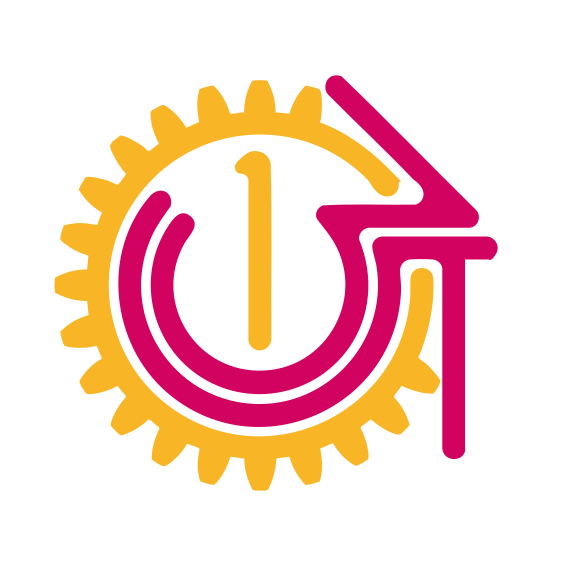

國際扶輪 3501 地區扶青社 行事曆 ｜ District 3501 Rotaract Club Calendar
把扶青社地區行事曆加入你自己的 Google 日曆，隨時掌握最新活動！
📱 手機版（Google 日曆 App）：
💻 電腦版：
+ → 選「透過網址訂閱日曆」
92d1a248705ec24dafd9c6452b2098b70c5b7c0bed76cdf3b2c6b99acf5b9515@group.calendar.google.com
✅ 同步後你可以：